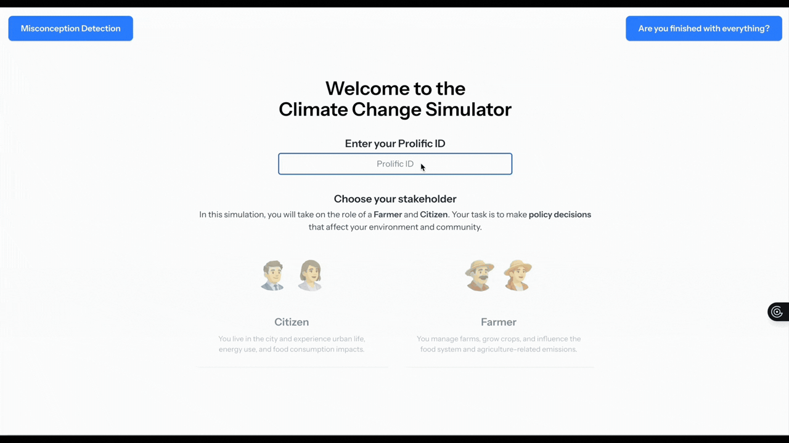
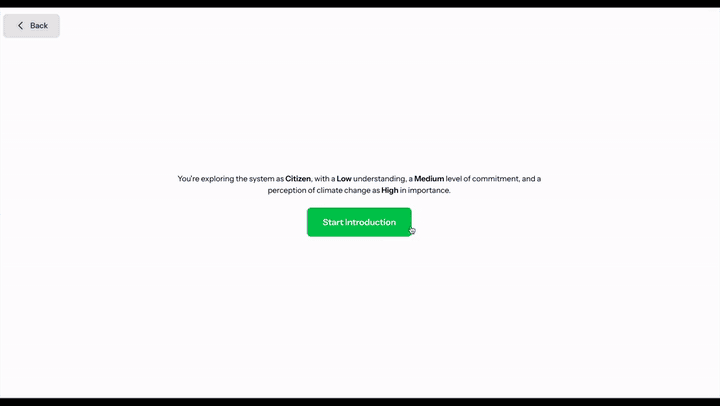
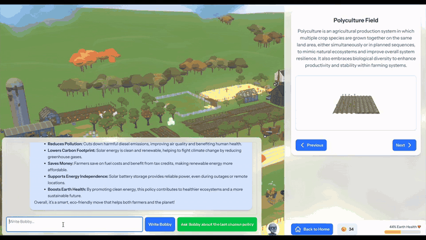
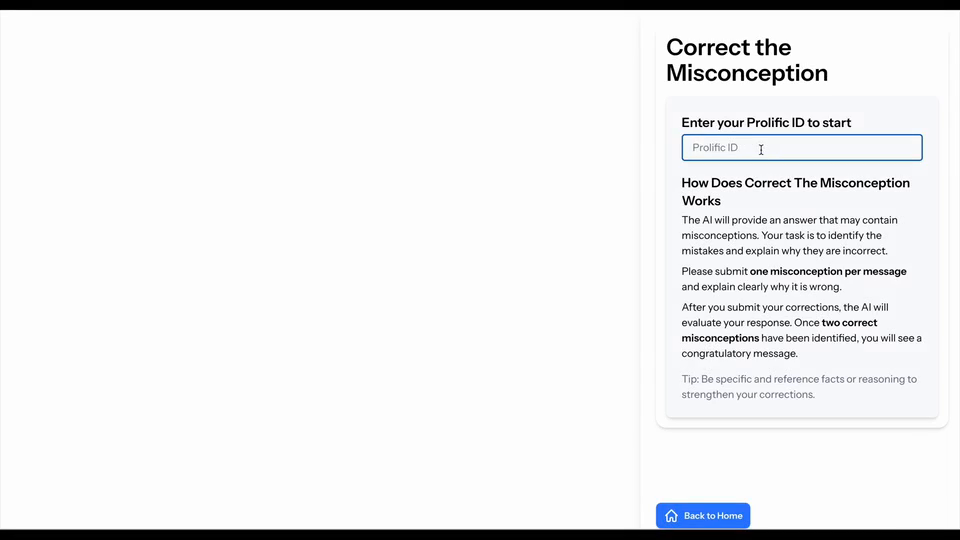

🎭 Choose a Perspective
The Citizen and Farmer roles shape the topics learners encounter and the trade-offs they experience.
SMILE Program · Project
Take a role. Weigh the trade-offs. Watch the planet answer back.
In this role-based 3D environment, learners become a Citizen or a Farmer, explore connected climate systems, and invest limited Power Coins in policies that visibly change the simulated world. A context-aware AI tutor, Bobby, helps learners interpret policy trade-offs, extreme events, and changes in their own reasoning.
The experience connects role-taking, exploration, policy decisions, visible consequences, and context-aware AI support in one continuous learner journey.
Scroll sideways for more →

The Citizen and Farmer roles shape the topics learners encounter and the trade-offs they experience.

Bobby introduces Earth Health, Power Coins, and what the learner is there to do.

A finite coin budget and a skip option make policy choice a balancing problem, and some cheap options do harm.

Earth Health links decisions to visible change, with fires, floods and other events appearing as it falls.

Bobby grounds each explanation in the policy the learner just chose and the state currently on screen.

In a separate mode, learners must find and repair misconceptions the AI deliberately planted.
Kevin Tanagon Gaffga (Climate Change Simulator)
Dr. Man Echo Su (PI, Project Lead, Thesis Advisor)
Prof. Tomohiro Nagashima (Advisor)
Developed and evaluated at the LaLaLab, Saarland Informatics Campus, in collaboration with the Leibniz-Institut für Wissensmedien.